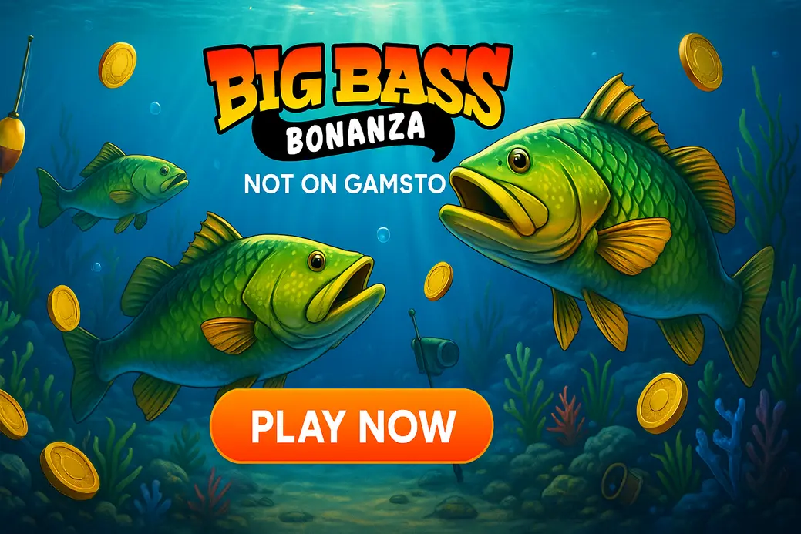

Big Bass Bonanza Slot Not on GamStop

Last Updated: 5 October 2026 | Verified by iGaming experts
Looking for big bass bonanza not on gamstop options? The short version: the game is a proper fan favourite because it is simple, loud, fishy and brutally streaky. Pragmatic Play built it as a 5-reel, 10-payline fishing slot with a high-volatility profile, a 2,100x max win and that famous fisherman wild who collects cash fish in the bonus.
Quick take: Big Bass Bonanza is best for players who want a clear bonus hunt, not 400 side features. The trade-off is obvious: base-game dead patches can feel damn long, so bankroll size matters more than hype.
Top Non-GamStop Casinos for Big Bass Bonanza
- Good Pragmatic Play coverage, including Big Bass titles
- Debit card and crypto cashier options
- Trade-off: wagering terms need a proper read
- Search bar actually works for “Big Bass”
- Fast crypto withdrawals when KYC is settled
- Trade-off: busy interface on first login
- Clean lobby filters for providers and themes
- Works neatly on mobile portrait mode
- Trade-off: bonus caps can limit bigger wins
- Solid slot library with Pragmatic Play staples
- Simple cashier layout
- Trade-off: live chat queues get annoying at peak times
- Big selection beyond fishing slots
- Crypto-friendly banking flow
- Trade-off: promo pages can feel cluttered
Casinos not on GamStop with Big Bass Bonanza appeal to UK players who want offshore casino access after understanding the extra responsibility involved. These sites are not UKGC-licensed, so they do not connect to GamStop. That freedom is the selling point, but it also means you must check licence details, limits, bonus rules and withdrawal conditions before depositing a quid.
For big bass not on gamstop searches, prioritise casinos where Pragmatic Play loads smoothly, demo mode is available, and the cashier does not bury withdrawal fees in tiny text.
How We Pick Big Bass Bonanza Casinos Not on GamStop
We look at the stuff players actually notice: does Big Bass Bonanza launch without errors, can you find it in ten seconds, are the bonus rules sane, and does the cashier pay without drama? A shiny homepage means bollocks if the game list is thin or live chat vanishes when you ask about withdrawals.
Licences & Safety
Non-GamStop casinos often use offshore licences such as Curaçao or Anjouan. That is not the same as UKGC protection. We favour sites that publish operator details, encryption notes, complaints routes and clear KYC rules. If a casino hides ownership, skip it.
Bonuses & Wagering
Big bonuses can help with a high-volatility slot, but only when wagering is playable. We like 35x–45x bonus wagering more than cartoonish 70x deals. Check max bet rules too; £5 per spin during wagering is common, and breaking it can void winnings.
Payments & Payout Speed
Good casinos give you clear banking choices: 💳 Debit Card, ₿ Bitcoin, Ł Litecoin, Ξ Ethereum, 🏦 Bank Transfer, 📱 E-wallet vouchers. In real use, crypto tends to move faster; Bitcoin withdrawals can land in 6 hours after approval, while cards take longer and face more bank checks.
Games & Software
Big Bass Bonanza is from Pragmatic Play, so the casino needs stable provider access. We also check related games like Big Bass Splash, Bigger Bass Bonanza and Gates of Olympus. Gates has its own weakness: huge multipliers look exciting, but the tumble dry spells can rinse a small balance.
Support & UX
The lobby should have search, provider filters and visible bonus tags. MyStake-style mega lobbies are powerful but crowded; GoldenBet-style cleaner lobbies feel easier, though they carry fewer bells and whistles. Live chat that answers bonus questions directly gets a big tick.
Big Bass Bonanza Slot Overview
Big Bass Bonanza is a fishing-themed online slot from Pragmatic Play. It uses 5 reels, 3 rows and 10 fixed paylines. The default RTP is 96.71%, volatility is high, and the top advertised win is 2,100x. Bets vary by casino build, so check the stake panel before spinning.
Big Bass Bonanza Free Spins and Fisherman Wild Explained
This is where the slot lives or dies. The base game pays with standard symbol hits, but the bonus round is the main event. You want scatters, fish money symbols and the fisherman landing at the same time. No fisherman, no collect. Brutal, but clear.
Free Spins in Big Bass Bonanza
Three, four or five scatter symbols trigger the bonus and award 10, 15 or 20 free spins. The scatter is the fishing rod, and it is easy to spot. The annoying part is landing two scatters often enough to tease you without paying the feature.
Fisherman Wild Collector in Big Bass Bonanza
The fisherman wild substitutes for regular symbols during free spins and collects every fish cash symbol on screen. If three fish values land and no fisherman appears, you get the visual tease but no collect. That little pause before the final reel is exactly why players keep chasing.
Retriggers and Multipliers up to x10 in Big Bass Bonanza
Every four fisherman wilds collected during the feature retriggers extra spins and increases the collector multiplier. The ladder can climb to x10, which is where the bonus gets spicy. The trade-off is that many features finish with one or two modest collects and no retrigger.
Big Bass Bonanza Paytable: Symbols and Payouts
The top regular symbol is the pelican, followed by tackle boxes, fishing floats and card ranks. Cash fish appear in the bonus and carry fixed prize values based on your stake. The paytable is simple, which is part of the appeal; you do not need a bloody spreadsheet to understand it.
| Element | What it does | Player note |
|---|---|---|
| Pelican | Highest standard symbol | Nice in base game, but not the reason to play |
| Fish cash symbols | Show money values in free spins | Worth nothing unless fisherman collects them |
| Fishing rod scatter | Triggers free spins | Two scatters tease constantly |
| Fisherman wild | Collects fish values | Best symbol in the game, no debate |
Big Bass Bonanza RTP Versions and Volatility
The best-known Big Bass Bonanza RTP is 96.71%, but Pragmatic Play supplies lower RTP builds such as 95.67% and 94.62% to operators. That gap matters. Over a long sample, a lower RTP build eats more of the bankroll, especially on a high-volatility game with feature gaps.
High volatility means prizes cluster unevenly. You can hit a tidy bonus early, then watch 120 spins do nothing interesting. That does not mean the slot is broken. It means the maths is spiky.
Big Bass Bonanza vs Its Sequels: The Series Compared
The Big Bass series became a whole pond. Big Bass Splash adds the same fishing feel with a brighter look, and people searching big bass splash not on gamstop are chasing that familiar bonus rhythm. Its weakness is the same: dead base spins.
Bigger Bass Bonanza feels more expanded, with a bolder presentation, but it can feel slower on older phones. Big Bass Hold & Spinner adds hold-style mechanics, which brings variety but also more moving parts. If you want clean maths and no fuss, the original still wins.
If you like this, try that: Try Fishin’ Frenzy for old-school simplicity, Book of Dead for a sharper bonus gamble, or Gates of Olympus for multiplier chaos. Each has a weakness: Fishin’ Frenzy feels dated, Book of Dead is swingy, and Gates can drain a balance fast.
Reasons to Play Big Bass Bonanza at Non-GamStop Casinos
The main reason is access. Some offshore casinos list Pragmatic Play titles alongside larger bonuses, crypto payments and fewer UK-specific restrictions. That is why phrases like big bass bonanza non gamstop, big bass no gamstop and non gamstop big bass keep appearing in search.
More casino choice, crypto banking, bigger promo menus, and broad slot libraries.
No UKGC safety net, no GamStop link, stricter self-control needed, and bonus rules can be tougher.
How to Start a Big Bass Bonanza Session in Four Steps
First, pick a casino with Pragmatic Play and visible responsible gambling tools. Second, check the RTP in the game info screen. Third, set a session budget before loading the reels. Fourth, use demo mode for five minutes if you are new. The spin button is a menace on mobile when you are tired, so slow down.
If you searched big bass not on gamestop, by the way, the correct term is GamStop, not GameStop. One is a UK self-exclusion scheme; the other sells games.
Casino Bonuses for Big Bass Bonanza Slot Fans
Bonuses can stretch a session, but Big Bass is not automatically bonus-friendly. Some casinos weight Pragmatic Play slots at 100%; others reduce contribution or exclude specific promos. Always open the bonus terms before claiming.
Welcome Packages on Big Bass Bonanza
A matched deposit gives more spins for the same cash outlay. The catch is wagering. A £100 bonus at 40x means £4,000 in turnover before withdrawal, so do not treat it like free money.
Free Spins on Big Bass Bonanza
Free spin bundles are neat when they are actually on Big Bass Bonanza. Many casinos advertise slot spins, then assign them to a different game. Check the promo tile and the game name inside your bonus wallet.
Cashback Deals for Big Bass Bonanza Players
Cashback suits volatile slots because losing sessions happen. A 10% weekly cashback with low wagering beats a giant reload with impossible rules. Still, cashback usually applies to net losses only, not every deposit.
Reload Bonuses for Big Bass Bonanza Sessions
Reloads help regular players, but they can push overplaying. If the reload needs a deposit at 11pm after a bad session, skip it. Chasing a fisherman with bonus money is still chasing.
Deposits and Withdrawals at Big Bass Bonanza Casinos
Payment options vary by casino, but the useful ones are clear: 💳 Debit Card, ₿ Bitcoin, Ξ Ethereum, Ł Litecoin, ₮ Tether, 🏦 Bank Transfer, 🎟️ Voucher. Debit cards feel familiar for UK players, but banks can decline offshore gambling transactions. Crypto is faster, though price movement is its own risk.
For withdrawals, verify your account early. A passport, proof of address and payment proof are standard. The best sites show pending times inside the cashier rather than hiding them in a help article.
Big Bass Bonanza on Phones and Tablets
Big Bass Bonanza plays well in portrait mode because the 5x3 grid is compact. On phones, the spin button sits low and is easy to hit with your thumb; great for comfort, dangerous for autopilot. The bet menu needs attention because a tap can jump from 20p to £1 faster than you expect.
On 4G, the first load takes longer due to provider authentication, but spins run smoothly once cached. Wi-Fi is better for bonus rounds because dropped connections during free spins feel grim, even though the result is server-side and resumes after reload. Tablet landscape view gives the cleanest layout: paytable text is readable, touch targets are wider, and the fisherman animation has room to breathe.
Mobile UX note: lock your screen orientation if your phone keeps flipping. Big Bass handles rotation, but the resize can hide the bet panel for a second. That is annoying mid-session.
Big Bass Bonanza Strategy Tips
No strategy changes the RNG. What you can control is stake size, RTP selection, session length and emotional tilt. That is where players either stay sensible or start doing daft stuff.
Size Bets for the Big Bass Bonanza Feature Gap
Use a stake that gives you at least 100 spins from your planned budget. For a £30 session, 20p or 30p spins make more sense than £1 spins. Feature gaps are real, and high stakes shorten your runway.
Check the Big Bass Bonanza RTP Build First
Open the game info screen and find the RTP. If you see 94.62%, understand you are taking a worse long-term deal than 96.71%. It does not decide one session, but it matters across many sessions.
Use the Big Bass Bonanza Demo as a Meter
Demo play helps you feel the rhythm: two-scatter teases, small base hits, bonus droughts, and quick features. It is not a prediction tool. It is a mood check before real money enters.
Hunt Retriggers with Patience, Not Bigger Bets
A bigger bet does not make the fisherman arrive. It only scales wins and losses. If you want retriggers, you need spins and discipline, not panic stakes.
Set Limits Before the First Spin
Set deposit, loss and time limits before launching. Not after a bad bonus. Not after the balance halves. Before. Future-you is less sensible than current-you when the fish values are flashing.
Big Bass Bonanza and Responsible Gambling
Big Bass Bonanza is entertaining, but it is also built to create tension. The fish values tease, the fisherman misses, and retriggers feel close even when the maths says nothing is due. If you have used GamStop because gambling caused harm, do not use non-GamStop casinos to get round that block.
Support Services
If gambling feels hard to control, speak to support early. Useful UK-facing organisations include BeGambleAware, GamCare, GamStop and UKGC guidance pages. Practical step: tell someone you trust and block gambling payments through your bank.
Limit Tools Inside the Casino
Look for deposit caps, cooling-off periods, reality checks and self-exclusion inside the account area. Non-GamStop casinos vary a lot here. If the tools are buried or support resists limit requests, leave.
Rules for Safe Play
Only play with money set aside for entertainment. Never chase a bonus. Never borrow to spin. Stop when the planned budget is gone. The slot will still be there tomorrow, and that is the damn point.
Final Verdict on Big Bass Bonanza
Big Bass Bonanza remains one of the cleanest bonus-hunt slots online. The appeal is obvious: simple rules, punchy free spins, visible cash prizes and a collector wild that creates proper tension. The weakness is just as clear: long quiet patches and lower RTP builds at some casinos.
For UK players comparing casinos not on gamstop with big bass bonanza, the smartest choice is not the biggest bonus. It is the site with clear licensing, fast withdrawals, the right RTP build, fair terms and tools that let you stop.
Big Bass Bonanza Not on GamStop: FAQ
Is Big Bass Bonanza available at casinos not on GamStop?
Yes. Big Bass Bonanza appears at many non-GamStop casinos that carry Pragmatic Play. Practical tip: search “Big Bass” in the lobby and confirm the provider before depositing.
Is it legal for UK players to use non-GamStop casinos?
Yes, UK players are not generally prosecuted for playing offshore sites. Practical tip: remember these casinos are not UKGC-regulated, so dispute handling and protections differ.
Can I deposit with a UK debit card?
Yes, some offshore casinos accept UK debit cards. Practical tip: if your bank declines the payment, do not keep hammering attempts; use a supported method or walk away.
Are non-GamStop casinos safe for Big Bass Bonanza?
Some are safer than others. Practical tip: check licence details, withdrawal terms, player reviews and responsible gambling tools before playing big bass non gamstop games.
What is the max win in Big Bass Bonanza?
The max win is 2,100x your stake. Practical tip: treat that as a ceiling, not an expectation, because high-volatility slots pay unevenly.
How do the free spins work in Big Bass Bonanza?
Three or more scatters trigger free spins, and fisherman wilds collect fish cash values. Practical tip: retriggers boost the collector multiplier, so the best bonuses need both fish and repeated fisherman hits.
Does Big Bass Bonanza have a bonus buy or jackpot?
It has no progressive jackpot. Some non-UK versions include a bonus buy, depending on casino and jurisdiction. Practical tip: bonus buys are expensive and can burn a bankroll quickly.
Useful Resources
Safer Gambling: Gambling should be paid entertainment, not income. If play stops feeling fun, use blocking tools and get support now.
BeGambleAware | GamCare | UKGC | GamStop